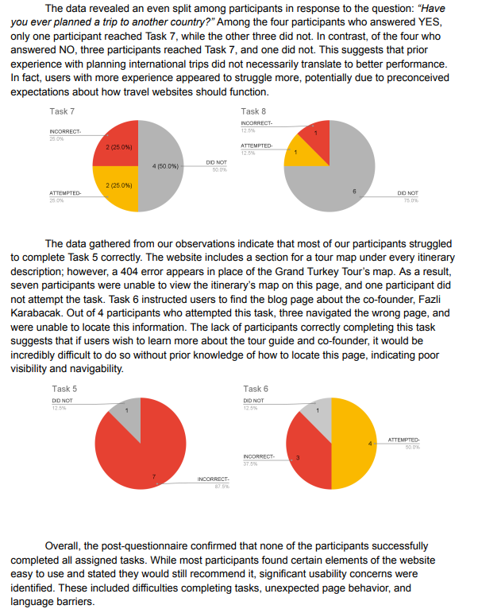
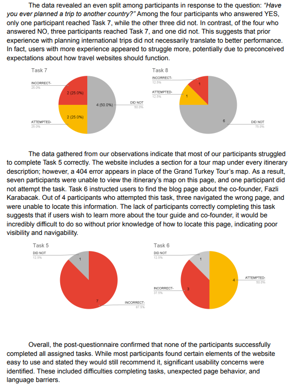

Usability Study
LINKS
CONTENT
This project focused on evaluating and improving the usability of a tourism website for Cappadocia, Turkey. The goal was to identify user experience issues that could negatively impact navigation, accessibility, and task completion for visitors planning trips. I conducted a structured usability analysis using established usability principles, reviewed site layout and content flow, and identified friction points affecting user engagement. The findings were translated into clear, actionable recommendations aimed at improving usability, accessibility, and overall user satisfaction.
SCREENSHOTS


 

KEY ACHIEVEMENTS
- Testing & Task Design — Designed task flows and conducted testing sessions, guiding participants through system interactions while coordinating observers to capture functionality issues.
- User Interaction & Analysis — Analyzed qualitative and quantitative data from user observation's, questionnaires, and session recordings to identify system errors.
- Technical Reporting & Recommendations — Produced a detailed report documenting findings and recommendations to improve system performance, user experience, and interface accessibility.
- Impact — Provided insights that improved usability, reduced user error, contributing to a more efficient and user friendly system experience.